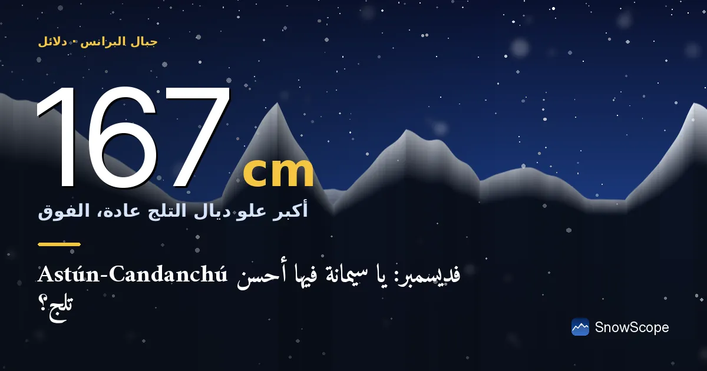

Astún-Candanchú فديسمبر: يا سيمانة فيها أحسن تلج؟
إلا كتخطط لسيمانة عائلية رخيصة فدجنبر ف Astún-Candanchú ف إسبانيا، حجز من 22 حتى ل 28 دجنبر وبقى فالبيستات ديال الوسط واللي الفوق. فأول دجنبر التحت ديال التيليسييجات غالبا ضعيف؛ آخر سيمانة كاملة فالشهر كتعطي أحسن فرصة ديال التلج الطبيعي.
شوف توقعات التلج مباشرة ديال Astún-Candanchú فالتطبيق ديال SnowScopeالعلو ديال التلج، التنبيهات والخريطة 3D، فابور.
جوج محطات فـ باص واحد للعائلة
Astún-Candanchú كيجمعو جوج محطات فصبانيا فباص واحد مشترك. المنطقة د التزلج فيها 35 كم ديال البيست و 17 ليفت، طالعة من 1659 م لـ 2272 م (613 م ديال الفرق فالعلو). التمن ديال سيزون 26-27 هو 54.50 EUR إيلا شريتيه أونلاين ولا 59.50 EUR فالمحطة للباص ديال نهار واحد للكبار.
ما كاينش باص ديال 6 أيام للعائلة. عوض هادشي، الباص ديال 5 أيام للكبار كيدير 237.00 EUR إيلا شريتيه أونلاين لسيزون 26-27، وهكا كتعرف شحال غتخلص قبل ما تختار التاريخ ديالك.

تسنى حتى لآخر ديسمبر
التاريخ ديال التلج فـ 46 شتوة اللي فاتو (من 1980-81 لـ 2025-26) كيبين بلي التلج كيكون قليل فبداية ديسمبر فالعلو ديال 1659 م. النسبة ديال الشتوات اللي كان فيها 30 سم أو كتر فالسفح هي 20 % فـ 1-7 ديسمبر، 33 % فـ 8-14 ديسمبر، 35 % فـ 15-21 ديسمبر، و 41 % فـ 22-28 ديسمبر. وبالنسبة لـ 50 سم أو كتر، السفح كيوصل غير لـ 9 %، 13 %، 15 %، و 17 % فهاد السيمانات بربعة.
فالعلو، سيمانة 22-28 ديسمبر هي أحسن وحدة للعائلات. فوسط المحطة (1965 م)، 30 سم أو كتر كيكون فـ 35 %، 39 %، 46 %، و 63 % من الشتوات اللي فاتو فالسيمانات د ديسمبر، بينما 50 سم أو كتر كيوصل لـ 17 %، 30 %، 28 %، و 37 %. فالعلو ديال 2272 م، 30 سم أو كتر كيوصل لـ 52 % فـ 1-7 ديسمبر، 57 % فـ 8-14 ديسمبر و 15-21 ديسمبر، و 67 % فـ 22-28 ديسمبر (50 سم أو كتر: 24 %، 30 %، 39 %، و 48 %).
فـ 13 نوفمبر 2026، التوقعات د التلج اليوم هي 0 سم فالسفح، وسط المحطة، والقمة، مع 0 سم ديال التلج الجديد فهاد 7 أيام الجاية فالسفح ووسط المحطة و 7 سم فالقمة. التوقعات د جوج سيمانات (من 13 لـ 26 نوفمبر 2026) كتقول بلي غيكون ما بين 5 سم و 30 سم فوق وسط المحطة، يعني البداية غتكون معطلة.
العلو ديال التلج فالسفح، وسط المحطة، والقمة
العلو المعتاد فديسمبر كيبين علاش العلو مهم. فديسمبر عادي، التلج كيكون فالمتوسط 18 سم فالسفح (13 سم فـ 15 ديسمبر)، 28 سم فوسط المحطة (20 سم فـ 15 ديسمبر)، و 38 سم فالقمة (29 سم فـ 15 ديسمبر). ديسمبر اللي كيكون فيه التلج قليل (واحد فكل 10 د الشتوات) كيهبط تحت 2 سم، 5 سم، و 6 سم، وشتوة 1989-90 كان فيها فالمتوسط 1 سم فالسفح و 2 سم فالعلو.
ديسمبر اللي كيكون فيه التلج كتير (واحد فكل 10 د الشتوات) كيطلع فوق 58 سم فالسفح، 80 سم فوسط المحطة، و 104 سم فالقمة؛ شتوة 2021-22 كان فيها فالمتوسط 85 سم، 114 سم، و 142 سم. التلج اللي كيبقى كيبدا عادة فـ 7 نوفمبر (السفح)، 5 نوفمبر (وسط المحطة)، و 3 نوفمبر (القمة)، وكيطلع لـ 94 سم، 131 سم، و 167 سم.
كيفاش كتقارن مع Baqueira Beret
Baqueira Beret فصبانيا كبر بكتير، فيها 154 كم ديال البيست و 36 ليفت من 1504 م لـ 2600 م (1096 م ديال الفرق فالعلو). لسيزون 2026-27، 'Baqueira Ticket' ديال نهار واحد للكبار كيدير 74,00 € (70,00 € بالكارط د 'Baqueira Pass') و 'Baqueira Ticket' ديال 6 أيام كيدير 359,00 €، مقارنة بـ 54.50 EUR (نهار واحد أونلاين) و 237.00 EUR (5 أيام أونلاين) فـ Astún-Candanchú.
فالتاريخ ديالنا، Astún-Candanchú كيكون فيها التلج فديسمبر كتر من Baqueira Beret فكاع المستويات. Baqueira Beret فيها فالمتوسط 8 سم فالسفح ديال 1504 م (قليل 0 سم، كتير فوق 37 سم)، 20 سم فـ 2052 م (قليل تحت 2 سم، كتير فوق 56 سم)، و 30 سم فـ 2600 م (قليل تحت 3 سم، كتير فوق 77 سم). النسبة ديال 22-28 ديسمبر لـ 30 سم أو كتر هي 20 % (سفح)، 41 % (وسط المحطة)، و 59 % (قمة)، وهي قل من ديال Astún-Candanchú اللي هي 41 %، 63 %، و 67 %.
تلج قل فديسمبر فالشتوات اللي فاتو
ملي تبغي تخطط، عقل بلي التلج فديسمبر نقص فالشتوات الأخيرة. فوسط الـ 15 شتوة اللولة (1980-81 لـ 1994-95)، Astún-Candanchú كان فيها فالمتوسط 20 سم فالسفح، 29 سم فوسط المحطة، و 39 سم فالقمة. فالـ 15 شتوة اللخرة (2011-12 لـ 2025-26)، هاد الأرقام هبطو لـ 15 سم، 23 سم، و 32 سم، بحال ديسمبر د الشتوة اللي فاتت (2025-26).
نصايح للي كيتزلجو
- ختار 22-28 ديسمبر لسيمانة العائلة ديالك، فين وسط المحطة كيوصل لـ 30 سم أو كتر فـ 63 % من الشتوات اللي فاتو والقمة فـ 67 %.
- تزلج غالبا فوسط المحطة (1965 م) والقمة (2272 م)، حيت السفح ديال 1659 م فيه غير 18 سم فالمتوسط فديسمبر.
- حجز الباص فالموقع الرسمي باش تخلص 54.50 EUR لنهار واحد عوض 59.50 EUR، ولا 237.00 EUR لـ 5 أيام.
- شوف النشرة ديال الانهيارات قبل ما تزلج خارج البيست، خصوصا إيلا كان طاح تلج جديد فالجهة الفوقانية.
خرائط أخرى (مواقع خارجية)
المراجع والمصادر
- Astún, official lift pass prices (tarifas 26-27) astun.com/forfaits/
- Baqueira Beret, official prices (tarifas), season 26-27 www.baqueira.es/es/tarifas
- SnowScope, December snow at three heights and today's snow map snowscope.app/
على هاد الأرقام
العلو ديال التلج فالمحطات هو أكثر تلج فالجهة الفوقانية فالتاريخ المكتوب؛ هادو تقديرات لمنطقة، ماشي قياس فنقطة وحدة. التوقعات يمكن تتبدل. ديما شوف النشرة الرسمية ديال الانهيارات قبل ما تخرج من البيست.
النشرات الرسمية ديال الانهيارات: AEMET – Boletín de peligro de aludes (Pirineo aragonés)
كيفاش تستاشهد بهاد المقال
للبحث، التعليم ولا الصحافة: الأرقام والرسومات تقدر تعاود تخدم بيهم بحرية تحت CC BY 4.0 مع هاد الاستشهاد.
SnowScope (2026), Astún-Candanchú فديسمبر: يا سيمانة فيها أحسن تلج؟, https://snowscope.app/blog/ar/2026/11/astun-candanchu-december-ski-joint-pass-snow-2026.html, تشاف ف 2026-11-14
SnowScope (Atlas Labs). (2026, November 14). Astún-Candanchú فديسمبر: يا سيمانة فيها أحسن تلج؟. SnowScope snow reports. https://snowscope.app/blog/ar/2026/11/astun-candanchu-december-ski-joint-pass-snow-2026.html
BibTeX
@misc{snowscope2026astuncandanchudecembersk,
author = {{SnowScope (Atlas Labs)}},
title = {Astún-Candanchú فديسمبر: يا سيمانة فيها أحسن تلج؟},
year = {2026},
month = nov,
howpublished = {\url{https://snowscope.app/blog/ar/2026/11/astun-candanchu-december-ski-joint-pass-snow-2026.html}},
note = {Published 2026-11-14 14:41 UTC; accessed 2026-11-14}
}· CC BY 4.0 · الطريقة، الداتا والأدوات →
Astún-Candanchú: التلج والحرارة حسب العلو، هاد الشتا مقارنة مع اللي فاتت (الأدوات) →
تابع Astún-Candanchú
فابور: ميساج ملي يجي التلج، والتوقعات كل صباح.